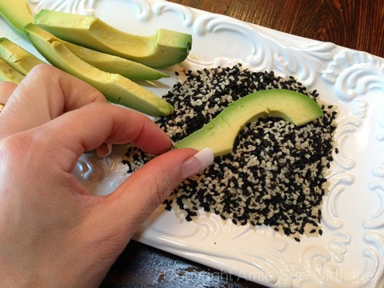
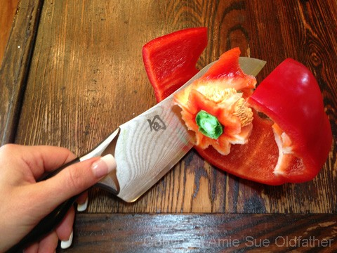
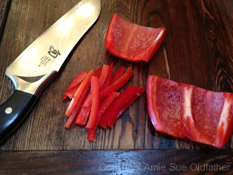
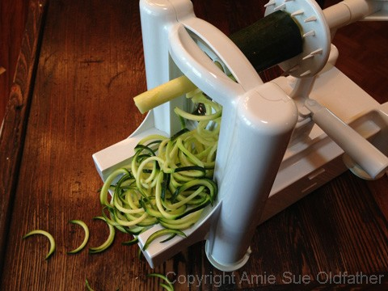
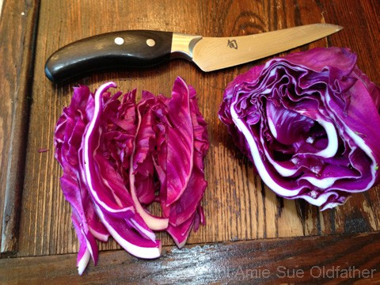
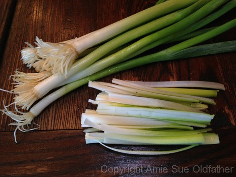
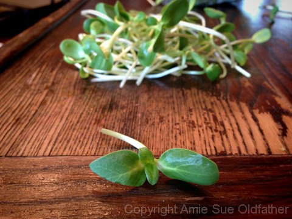
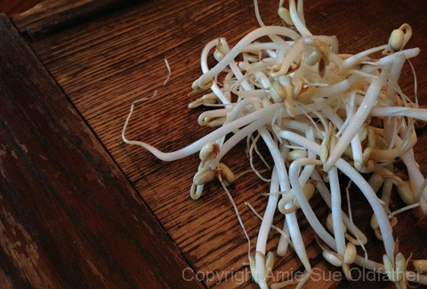

Sesame Crusted Avocado Spring Rolls with Almond Dipping Sauce
~ raw, gluten-free ~
This may appear to be a long recipe…that’s because it is, but that doesn’t mean it’s complicated. :) This evening when I made these Spring rolls, I was craving light, crispy, fresh, vibrant, veggies. And what better way to eat them, then all snuggled up in a wrap.
When we eat, we eat not only for fuel and nutritional needs but also to feel satiated. To feel full and content. I don’t know about you, but I can down a pretty hefty sized salad. But if I add fat to it, I find that I get fuller quicker, and I stay fuller longer. So in today’s dinner, I added some avocado to my rolls. Since they are high in fat they tend to slow down the digestion of foods that require a shorter digestion time; thus you feel fuller longer.
The beauty of making veggie rolls such as this one is that you can use whatever ingredients you have on hand or you can tailor it to your taste buds. You can make plenty of extras and store them in the fridge for several days. Just make sure they are separated from one another (if using rice paper) and seal them in an airtight container, so they don’t dry out or absorb other fridge odors. :)
The sauce was inspired by The Yummy Life. Her version used peanuts, and it was cooked. I made it with almond butter and converted it to a raw version. And man’o’man was it delicious!
Ingredients:
Yields 6 spring rolls
Quinoa: (see below for raw sprouted)
- 1/2 cup uncooked red quinoa = 1 1/2 cups
- 1 1/2 cups water (cooking water)
- 1/2 tsp roasted sesame oil
- 1/2 tsp cumin
- 1/4 tsp Himalayan pink salt
Avocado:
- 1 avocado, skinned and seeded
- 1 Tbsp toasted sesame oil
- 2 tsp black sesame seeds
- 2 tsp white sesame seeds
Filling:
- 6 rice paper or collard leaves
- 1 organic red pepper
- 2 cups sunflower sprouts
- 2 cups mung beans
- 1 zucchini, sliced into strips
- 3 green onions
- 1 cup sliced purple cabbage tossed in:
- 1 Tbsp raw honey
- 1 Tbsp lemon juice
Almond Dipping Sauce: yields 1 1/2 cups
- 1/2 cup water
- 1/2 cup almond butter
- 2 Tbsp tamari sauce
- 1 Tbsp raw honey
- 2 tsp rice vinegar
- 1 tsp toasted sesame oil
- 1/4 tsp cayenne pepper
- 1/4 tsp ground ginger
- 1/4 tsp ground garlic
Preparation:
Quinoa: cooked or sprouted:
- Cook ~ Rinse quinoa till water runs clear. Combine 1/2 cup quinoa and 1 1/2 cups of water in a medium-sized saucepan. Bring to a boil over high heat. Reduce heat to medium-low; cover and simmer 15 minutes or until most of the liquid is absorbed. Turn off heat and let stand covered 5 minutes.
- Sprout ~ to make approx. 4 cups finished product, put 2 1/2 cups of quinoa in a large bowl or jar. Add 2-3 times as much cool (60-70 degree) water. Mix quinoa well to assure even water coverage. Soak for 20-30 minutes. Then drain off the soak water, rinse well and drain. Place a mesh lid on the jar and set anywhere out of direct sunlight and at room temperature (70° is optimal). Rinse and Drain again every 8-12 hours until tails are formed. Now it is ready to use.
- After cooking or sprouting the quinoa, stir in the roasted sesame oil, cumin, and salt.
Avocado preparation:
- Use a ripe but firm avocado. Peel the skin off and remove the pit. Slice the avocado into strips.
- Coat eat a slice with the sesame oil and sesame seeds. Set aside.
Filling prep:
- Slice the red pepper, green onions, and zucchini into matchstick cuts. Set aside.
- Slice the cabbage into strips and toss with honey and lemon juice. Set aside.
- Have the sunflower sprouts and mung beans ready.
Almond Dipping Sauce:
- In the blender combine the ingredients in the following order; water, almond butter, tamari sauce, honey, vinegar, oil, cayenne, ginger, and garlic.
- I have substituted the honey for 2 drops of NuNaturals liquid stevia, and it was great.
- You can use raw coconut vinegar or Braggs apple cider vinegar in place of the rice vinegar.
- Blend for 30 seconds, until creamy. Place in a bowl for dipping.
Assembly:
- Rice paper – Soak the rice paper for 10-15 seconds (you don’t want it too soft when taking it out of the water but pliable enough to roll.) Place rice paper on a cutting board and load with
- Collard leaves – Use medium-sized leaves. Lay the leaf on the cutting board with the prominent spine facing up. With a paring knife, gently shave off the spine, the thick core part of the stem. Be careful that you don’t cut too deep and go through the leaf. Flip the leaf over to fill.
- Lay the selected wrap on the cutting board and layer in all amazing ingredients!
- Fold in the sides, then the bottom and then roll, tucking all the ingredients in. Slice in half and enjoy with the Almond Dipping Sauce!
Make sure that your avocado is fresh, ripe but not too mushy.

Coat the avocado sliced with the sesame oil than in sesame seeds.

Remove the seeds and pepper membrane, then cut into match-sticks slices.

For my zucchini strips, I used my spiralizer, but this is not required (just more fun :)
You can use a pairing knife and cut them into matchstick slices as well.

Cut the cabbage into strips and marinate while you are preparing everything else.

Slice the onions into strips or discs. Your call.

No prep work needed for sunflower sprouts. :)

None needed for mung bean sprouts either. This is getting easier by the minute.

A smorgasbord of yumminess!
Today’s demonstration is with rice paper.
After layering your veggies on the rice paper, pull in the edges first, then fold the back over
and then nip-and-tuck the veggies and roll tightly till it creates a veggie burrito!
For the ease of eating, cut in half… or not, whatever tickles your fancy. Enjoy!
© AmieSue.com